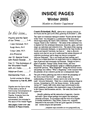
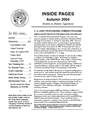
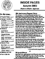
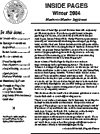
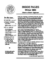

C.G. Jung Society, Seattle C.G. Jung Society, Seattle
C.G. Jung Society, Seattle C.G. Jung Society, Seattle
The goal of Inside Pages: Member-to-Member is to encourage member communications in the C.G. Jung Society newsletter and web site, enlivening the Seattle Jung community experience and stimulating dialogue. It is intended to allow members to share their own experiences and expressions of Jungian thought. All editions are linked below and posted in Acrobat (.pdf) format.
Please also visit the Inside Pages: In-Depth page.
Note: For remarks the 2004-2005 Psyche and the Spirit of the Times sessions, see Inside Pages: In-Depth.
| Fall 2005 Edition  |
||
Fall 2004 Edition  |
||
Fall 2003 Edition  |
Winter 2004 Edition  |
Spring 2004 Edition  |
 |
 |
No edition published Spring 2003 |
Fall 2001 Edition |
No edition published Winter 2002 |
Spring 2002 Edition |
Fall 2000 Edition |
Winter 2001 Edition |
Spring 2001 Edition |
 Download Acrobat Reader if you are unable to view .pdf files.
Download Acrobat Reader if you are unable to view .pdf files.
C.G. Jung Society, Seattle home page
Updated: 7 September 2005
webmaster@jungseattle.org